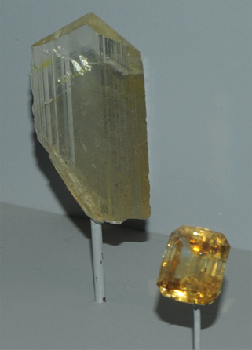
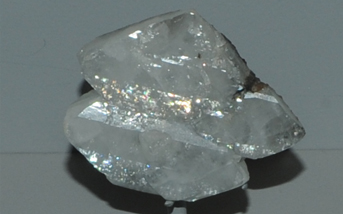
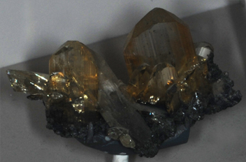
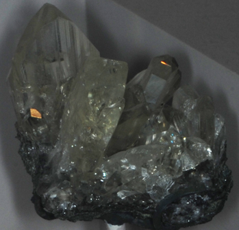
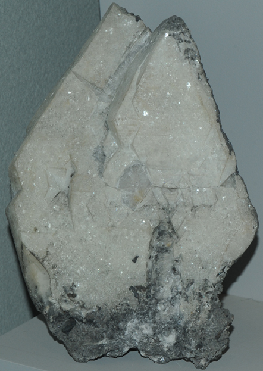
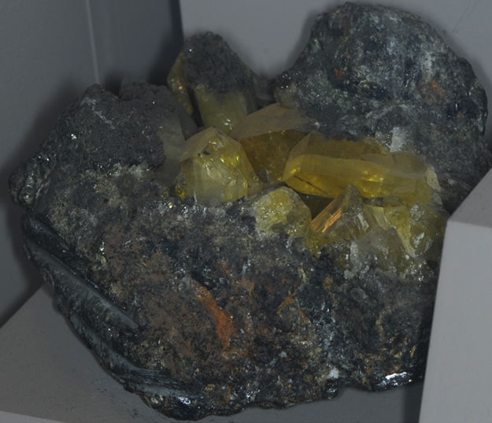

Anglesite
|

| PbSO4
These samples of anglesite are displayed in the Smithsonian Museum of Natural History. Anglesite is a sulfate mineral of lead with the composition PbSO4. The origin of the specimens at left is Tsumeb, Namibia. The sample at far left is about 3x4 cm. The gem is labeled at 77.5 carats.

This sample of anglesite is from Proprietary mine, Broken Hill, New South Wales, Australia. It is about 8cm across.
|
|


These two samples are from Pit IX, Touisset mine, Touisset, Morocco. They are about 8cm across.
|

This sample of anglesite is about 13x16 cm and is from Tsumeb, Namibia.
|
|

|
This sample of anglesite is about 14 cm across and is from Pit IX, Touisset mine, Touisset, Morocco.
|
Mindat: Anglesite
|
Index |